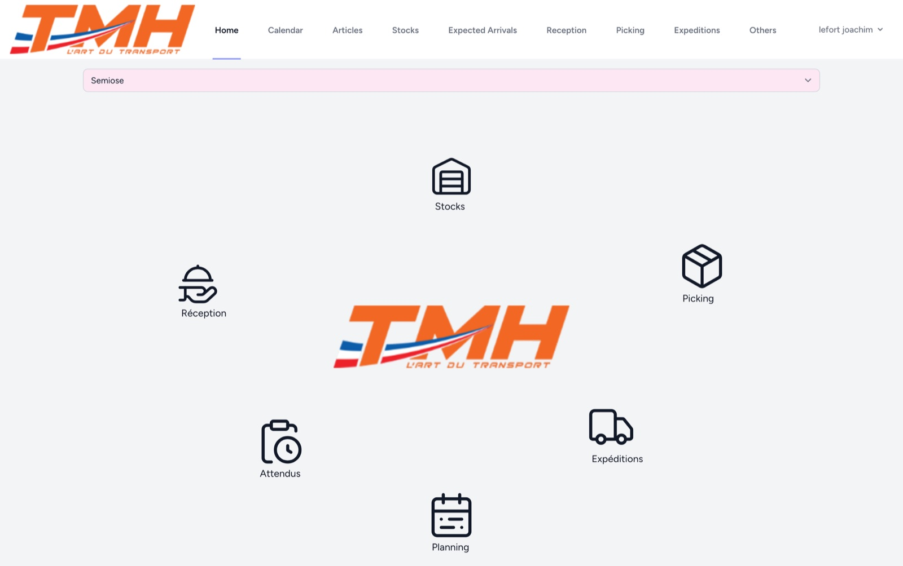

Développeur en alternance
TMH Transports · Transport d’œuvres d’art
- Développement du logiciel web de gestion d’entrepôt : stocks, réceptions, picking, expéditions et planning.
- Configuration et mise en production des serveurs.
- Programmes en Rust pour rendre les migrations de données beaucoup plus rapides.
- Framework
- Laravel
- Langages
- PHPRustPython
